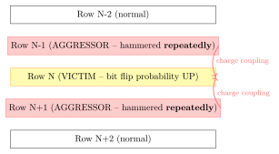
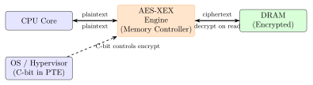

Chapter 12: Memory Security¶
Note: Memory security encompasses a wide range of threats and defenses. This chapter covers DRAM vulnerabilities (Rowhammer and variants), memory encryption (AMD SME/SEV, Intel TME/MKTME), memory tagging (ARM MTE), cold boot attacks, ECC memory, and hardware memory safety enforcement. Understanding memory security is critical for cloud isolation, TEE design, and any application handling sensitive cryptographic material.
12.1 DRAM Architecture and Rowhammer¶
12.1.1 DRAM Row Activation and Retention¶
DRAM stores bits as charge in capacitors. Each DRAM cell leaks charge over time: the retention time varies by temperature (\(\approx\)64 ms at 85 \(\deg\)C, longer at lower temperatures). DRAM cells are organized in rows (4–8 KB per row). A row must be periodically refreshed (tREFI = 7.8 ms for DDR4) to prevent bit loss.
When a DRAM row is activated (opened), it disturbs adjacent rows by electromagnetic coupling. Repeated activation of an aggressor row increases the probability of bit flips in victim rows.
12.1.2 Rowhammer (Kim et al. ISCA 2014)¶
Kim et al. (ISCA 2014) demonstrated that rapidly and repeatedly accessing (hammering) DRAM rows causes bit flips in adjacent rows. Their experimental methodology:
-
Select two aggressor rows flanking a victim row (double-sided hammering)
-
Repeatedly read aggressor rows, flushing cache after each access (using CLFLUSH)
-
After millions of accesses (within one tREFI window), victim row bits flip
/* C: Basic Rowhammer PoC -- double-sided hammer */
#include <stdlib.h>
#include <string.h>
#include <x86intrin.h>
void rowhammer(uint64_t *aggressor1, uint64_t *aggressor2, int iters) {
for (int i = 0; i < iters; i++) {
*aggressor1; /* Read aggressor row 1 */
*aggressor2; /* Read aggressor row 2 */
_mm_clflush(aggressor1); /* Evict from cache */
_mm_clflush(aggressor2);
_mm_mfence(); /* Serialize memory operations */
}
}
/* Check victim row for bit flips */
void check_victim(uint64_t *victim, size_t len, uint64_t expected) {
for (size_t i = 0; i < len/8; i++) {
if (victim[i] != expected) {
printf("FLIP at offset
", i*8, victim[i] ^ expected);
}
}
}
12.1.3 Rowhammer Attack Variants¶
-
Double-sided hammering: Two aggressor rows flank victim row. Most effective; requires knowing DRAM bank/row mapping. Demonstrated by Kim et al. 2014.
-
One-location hammering: Single aggressor accessed repeatedly. Less effective but requires fewer known addresses.
-
Half-double (Google, 2021): Aggressor rows one row away from victim (not adjacent). Bypasses some TRR implementations that only protect direct neighbors.
-
Blacksmith (Jattke et al. 2021): Non-uniform hammering patterns with varying aggressor counts and access frequencies. Bypasses all known TRR implementations.
-
RowPress (Luo et al. 2023): Extended aggressor row activation time (instead of hammering). Exploits DRAM retention failure at sustained high temperature.
-
TRRespass (Frigo et al. 2020): Many-sided hammering (>2 aggressors) bypasses Target Row Refresh (TRR) by exhausting refresh coverage.
12.1.4 Privilege Escalation via Rowhammer¶
Google Project Zero demonstrated (2015) privilege escalation via Rowhammer by targeting DRAM containing page table entries (PTEs). Flipping specific bits in a PTE can grant arbitrary memory access to an unprivileged process.
Attack steps: (1) Spray memory with transparent huge pages to achieve predictable DRAM layout; (2) Identify hammer-vulnerable DRAM rows via timing; (3) Hammer adjacent to page table page; (4) Flip bit in PTE to map attacker memory with kernel read/write privileges.


12.2 DRAM Rowhammer Mitigations¶
12.2.1 DDR4 Target Row Refresh (TRR)¶
DDR4 includes Target Row Refresh (TRR) as an in-DRAM mitigation. The DRAM internally tracks row activation counts and proactively refreshes rows adjacent to highly-activated rows.
TRRespass (Frigo et al. 2020) demonstrated that TRR can be exhausted by using many-sided hammering (more than 2 aggressor rows). By hammering a large set of rows simultaneously, the attacker exceeds TRR’s limited tracking capacity (\(\approx\)20 rows in typical DDR4 DIMMs).
12.2.2 DDR5 Per-Row Activation Count (PRAC)¶
DDR5 introduces Per-Row Activation Count (PRAC), a hardware counter per DRAM row that tracks activations with higher precision. The PRAC mechanism:
-
Each row maintains an activation counter (RFM Alert Refresh Activation Count)
-
When counter exceeds threshold, DRAM issues an Alert-Back (AB) signal to the controller
-
Memory controller responds with a Refresh Management Block (RAAMB) command
-
DRAM refreshes the flagged row and its neighbors before allowing further activations
PRAC provides much stronger rowhammer protection than TRR because it maintains per-row state rather than approximate tracking.
12.2.3 ECC Memory and Rowhammer¶
ECC (Error-Correcting Code) DRAM uses SECDED (Single Error Correct, Double Error Detect) to detect and correct single-bit errors. A standard DDR4 ECC DIMM uses 72 bits per 64-bit word: 8 extra bits for ECC syndrome.
Rowhammer via ECC: Kim et al. 2014 and subsequent work showed that Rowhammer-induced bit flips can bypass ECC by causing multi-bit flips in the same 8-bit ECC word. SECDED can correct only one bit per 72-bit code word. Two flips in the same ECC word = uncorrectable.
Chipkill ECC (IBM): Each byte of a 64-bit word uses a separate DRAM chip. Single DRAM chip failure (all 8 bits of the chip) = correctable by Chipkill. Provides stronger protection than standard SECDED against chip-level failures, but does not prevent all Rowhammer attacks.
12.3 AMD Memory Encryption: SME, TSME, and SEV¶
AMD Secure Memory Encryption (SME) was introduced with the EPYC "Naples" (Zen 1) processor. It encrypts DRAM content transparently using AES-128-XEX with a physically-derived tweak, providing protection against cold boot attacks and physical memory probing.
12.3.1 AMD SME Architecture¶
-
AES-128-XEX engine: Integrated in the SoC memory controller. XEX (XOR-Encrypt-XOR) mode uses the physical address as a tweak to prevent block relocation attacks.
-
C-bit (bit 47) in PTE: When set, indicates the page is encrypted. Software can choose per-page encryption. C-bit is located at physical address bit 47, reducing the usable physical address space to 47 bits.
-
Single key: All encrypted memory uses the same 128-bit key generated by the AMD Secure Processor (ASP) at boot from a hardware random source. Key is never exported or accessible to software.
-
TSME (Transparent SME): Encrypts all DRAM transparently regardless of C-bit. Enabled via AMD_MSR_SME_EN MSR bit. No software changes required.
12.3.2 AMD SEV (Secure Encrypted Virtualization)¶
AMD SEV extends SME to virtualization: each VM gets its own AES-128 key, so the hypervisor cannot read VM memory in plaintext.
-
SEV: Per-VM key (up to 509 simultaneous VMs on EPYC). Hypervisor cannot decrypt.
-
SEV-ES (Encrypted State): Also encrypts VMCB (VM save area) CPU register state.
-
SEV-SNP (Secure Nested Paging): Adds reverse map table (RMP) enforcing that each physical page can only be mapped by one VM. Prevents memory remapping attacks.
/* C: Set C-bit in PTE for AMD SME encryption */
#define AMD_SME_CBIT (1UL << 47)
/* In Linux kernel memory mapping: */
pgprot_t encrypt_prot(pgprot_t prot) {
return pgprot_val(prot) | AMD_SME_CBIT;
}
/* Enable TSME via MSR (firmware/early boot only): */
uint64_t msr_val = rdmsr(MSR_K8_SYSCFG);
msr_val |= (1 << 24); /* MSR_K8_SYSCFG_MEM_ENCRYPT_EN */
wrmsr(MSR_K8_SYSCFG, msr_val);
12.4 Intel Total Memory Encryption (TME) and MKTME¶
Intel TME (Total Memory Encryption), introduced in Ice Lake Xeon (Icelake-SP, 10nm), encrypts all DRAM using AES-128-XTS hardware in the memory controller. Single key covers all physical memory.
Intel MKTME (Multi-Key TME, Sapphire Rapids Xeon): up to 65,535 simultaneous keys, each associated with specific physical memory ranges. Hypervisors use MKTME to assign unique keys to each VM, similar to AMD SEV but implemented via Intel Key Management Service (KMS).
/* C: Intel TME configuration (Linux kernel, arch/x86/kernel/tme.c) */
#define MSR_IA32_TME_ACTIVATE 0x982
#define MSR_IA32_TME_CAPABILITY 0x981
/* Read TME capability */
uint64_t cap = rdmsr(MSR_IA32_TME_CAPABILITY);
bool tme_supported = (cap >> 0) & 1;
int max_keys = (cap >> 36) & 0xFFFF;
printf("TME: supported=
", tme_supported, max_keys);
/* Enable TME (done by BIOS/UEFI in production): */
wrmsr(MSR_IA32_TME_ACTIVATE, (1UL << 1) | /* TME enable */
(1UL << 3)); /* AES-128-XTS algorithm */
12.5 ARM Memory Tagging Extension (MTE)¶
ARM MTE (Memory Tagging Extension), introduced in ARMv8.5-A (2018), provides hardware-enforced memory safety by associating 4-bit color tags with memory allocations and pointers.
-
Each 16-byte aligned granule of memory has a 4-bit tag stored in DRAM spare bits
-
Each pointer has a 4-bit tag in bits [59:56] of the virtual address
-
On memory access, hardware compares pointer tag with granule tag
-
Tag mismatch raises a fault (sync mode) or logs an asynchronous exception
-
Provides heap buffer overflow and use-after-free detection with hardware enforcement
/* C: ARM MTE heap allocation with tag assignment */
#include <arm_acle.h>
#include <sys/mman.h>
/* Allocate tagged memory using mmap with PROT_MTE */
void *alloc_tagged(size_t size) {
void *ptr = mmap(NULL, size, PROT_READ|PROT_WRITE|PROT_MTE,
MAP_PRIVATE|MAP_ANONYMOUS, -1, 0);
if (ptr == MAP_FAILED) return NULL;
/* Generate random tag and set granule tag */
void *tagged_ptr = __arm_mte_create_random_tag(ptr, 0);
__arm_mte_set_tag(tagged_ptr);
return tagged_ptr;
}
/* Access with wrong tag triggers MTE fault */
void *wrong_tag_ptr = __arm_mte_create_random_tag(ptr, ~0);
*((int*)wrong_tag_ptr) = 0; /* SIGSEGV or async fault */
12.6 Cold Boot Attacks and TRESOR Defense¶
DRAM cells retain data for seconds to minutes after power is removed, especially when cooled. At room temperature, data remanence is \(\approx\)5–30 seconds. At liquid nitrogen (\(-196^{\circ}\)C), remanence can extend to hours. This enables cold boot attacks:
-
Boot target system into OS (BitLocker unlocked, AES keys in RAM)
-
Spray compressed air upside-down to cool DRAM to \(\approx -50^{\circ}\)C
-
Power off system, quickly remove DIMMs (must move within \(\approx\)30 seconds)
-
Insert DIMMs into attacker system, boot from USB key recovery tool
-
Scan RAM image for AES key schedules (AES-Keyfind tool)
TRESOR Defense (Muller et al. 2011): Store AES key material in x86 debug registers (DR0–DR3, up to 256 bits on 64-bit systems) instead of RAM. Debug registers are not accessible to user space and not included in hibernation images. AES operations are performed by injecting key material from debug registers at encryption time.
12.7 FPGA Memory Security Implementations¶
On-chip SRAM scrubbing on FPGA: SEU (Single Event Upset) from cosmic rays can flip SRAM bits. Xilinx UltraScale+ SEM (Soft Error Mitigation) IP continuously reads and corrects FPGA configuration SRAM using SECDED ECC built into the configuration frame structure.
External DRAM interface encryption on FPGA: Xilinx HBM2 interface (UltraScale+ HBM FPGAs: xcku5p-HBM) encrypts the HBM2 interface using AES-128-XEX implemented in the HBM interface shell, protecting against bus interception on the HBM stack.
BRAM ECC on Xilinx FPGAs: All 36 Kbit BRAMs in UltraScale+ support SECDED ECC with:
-
32-bit data + 7-bit syndrome = 39-bit BRAM word with ECC
-
Single-bit error correction, double-bit error detection
-
Soft error inject testability (invert any bit for testing)
12.8 Solutions Comparison¶
| Solution | Vendor | Type | Mechanism | Coverage |
|---|---|---|---|---|
| AMD SME | AMD | HW | AES-128-XEX in MC | All DRAM (single key) |
| AMD TSME | AMD | HW | AES-128-XEX, auto | All DRAM transparent |
| AMD SEV-SNP | AMD | HW | Per-VM AES key | VM isolation |
| Intel TME | Intel | HW | AES-128-XTS in MC | All DRAM (single key) |
| Intel MKTME | Intel | HW | AES-256-XTS/key | Per-domain isolation |
| ARM MTE | ARM | HW | 4-bit tag / 16B | Heap safety |
| CHERI capabilities | ARM/Cambridge | HW | Fat pointer bounds | Code+data safety |
| DDR4 TRR | DRAM vendors | HW | Row refresh counter | Rowhammer (partial) |
| DDR5 PRAC | JEDEC | HW | Per-row activation cnt | Rowhammer (strong) |
| ECC SECDED | JEDEC | HW | Hamming code | 1-bit correction |
| Chipkill ECC | IBM | HW | Chip-level ECC | Chip failure correction |
| TRESOR | Academic | SW | Key in debug regs | Cold boot defense |
| AddressSanitizer | Google/OSS | SW+HW | Shadow memory | Heap/stack bugs |
| MemorySanitizer | Google/OSS | SW | Uninit tracking | Uninitialized reads |
| Valgrind Memcheck | OSS | SW | Dynamic binary | All memory errors |
| Implementation | Process | Algorithm | Throughput | Power | Overhead |
|---|---|---|---|---|---|
| AMD EPYC 7003 (Zen 3) SME | 7nm TSMC | AES-128-XEX | 51.2 GB/s | \(<\)5 W | \(<\)1% |
| Intel Ice Lake Xeon TME | 10nm Intel | AES-128-XTS | 51.2 GB/s | \(<\)5 W | \(<\)1% |
| Intel Sapphire Rapids MKTME | 7nm Intel | AES-256-XTS | 76.8 GB/s | \(<\)8 W | \(<\)2% |
| Kingston Aegis AES DIMM | DDR4 ASIC | AES-256-XTS | 34 GB/s | \(<\)2 W | \(<\)1% |
| Intel Optane PMem 200 | 3D XPoint | AES-256 | 6.6 GB/s | \(<\)3 W | None |
12.9 Solved Problems¶
Solved Problem: Rowhammer Bit Flip Probability for Given Refresh Interval
A DDR4-3200 DIMM has tREFI = 7.8 ms and row cycle time tRC = 45 ns. An attacker can perform double-sided hammering. Calculate: (a) maximum activations per tREFI window; (b) required activations for 99% bit flip probability given \(P_{flip}(n) = 1 - e^{-n/N_{crit}}\) with \(N_{crit} = 140{,}000\); (c) whether the attack completes within one tREFI window.
Solution:
Step 1: Maximum Activations per tREFI
Each hammer iteration accesses two aggressor rows + 2 CLFLUSH operations. CLFLUSH latency \(\approx\) 200 ns (cache miss). Total per iteration:
Maximum activations per tREFI:
Step 2: Required Activations for 99% Probability
Step 3: Time Required
Number of tREFI windows: \(315.9 / 7.8 = 40.5\) windows.
Step 4: Feasibility Assessment
The attack requires \(\approx\)41 tREFI windows (316 ms total). This is feasible from a user-space process on most x86 systems. The attacker needs 644,700 aggressor row activations, achievable in 316 ms. DDR4 TRR has activation tracking window of one tREFI – attacks spreading activations across multiple windows may evade some TRR implementations.
Conclusion: Double-sided hammering achieves 99% bit flip probability in \(\approx\)316 ms with 644,700 activations across 41 DRAM refresh windows. The attack is readily feasible from an unprivileged process with direct physical memory access.
Solved Problem: ECC SECDED Correction Capability Analysis
A DDR4 ECC DIMM uses SECDED with 72-bit code words (64 data + 8 check bits). (a) What is the Hamming distance of SECDED? (b) Can it correct 2-bit errors? (c) A Rowhammer attack causes 2 bit flips in the same 64-bit word. What is the ECC response? (d) What minimum ECC strength would be needed to correct 2-bit errors?
Solution:
Step 1: SECDED Code Parameters
SECDED uses a \((72, 64)\) Hamming code: 72-bit codeword, 64 data bits, 8 check bits. Minimum Hamming distance: \(d_{min} = 4\) (SECDED property).
Step 2: Error Correction Capability
For a code with \(d_{min} = 4\):
-
Detect up to \(t = d_{min} - 1 = 3\) errors
-
Correct up to \(\lfloor (d_{min}-1)/2 \rfloor = 1\) error
SECDED cannot correct 2-bit errors. It can only detect them (as DED – Double Error Detect).
Step 3: Rowhammer 2-Bit Flip Scenario
Two bit flips in the same 72-bit codeword: the syndrome indicates a detected-but-uncorrectable double-bit error. SECDED raises an MBE (Multi-Bit Error) flag, triggering a machine check exception (MCE) on x86 or a platform error on ARM. The system crashes or reboots.
However: if the two flips are in different 72-bit codewords (different DRAM chips), each flip is corrected independently. Chipkill ECC handles the case where all bits of one chip fail.
Step 4: Correction of 2-Bit Errors
A \((79, 64)\) code (64 data + 15 check bits) with \(d_{min} = 6\) can correct 2-bit errors: \(\lfloor (6-1)/2 \rfloor = 2\) error correction capability. This requires 15 check bits per 64-bit word vs. the 8 used by SECDED – a 46% overhead, uneconomical for commodity DRAM.
Conclusion: SECDED (72,64) cannot correct 2-bit Rowhammer flips in the same codeword. The MBE triggers a system crash rather than a silent data corruption. This is a security-relevant behavior: Rowhammer causing 2-bit flips in the same ECC word causes system crash, not privilege escalation.
Solved Problem: AMD SME Physical Address C-Bit Encoding
An AMD EPYC 7543 processor (Zen 3 microarchitecture, 7 nm TSMC) supports Secure Memory Encryption (SME) with the memory encryption C-bit located at bit position 47 of the physical address. The processor has a 48-bit physical address space (256 TB). A page table entry (PTE) for a 4 KB page at physical address 0x0000_7FFF_FF00_0000 is to be marked encrypted.
-
Calculate the C-bit mask for this processor.
-
Compute the PTE physical address field value with the C-bit set.
-
If the Linux kernel uses
__sme_set(addr)to set the C-bit, show the resulting 64-bit value stored in CR3 when the encrypted page directory base is at physical address0x0000_0001_0000_0000. -
Explain the TSME (Transparent SME) mode and why it requires no OS changes.
Solution: Part (a): C-Bit Mask Calculation
The C-bit position is reported in CPUID leaf 0x8000_001F, EBX bits [5:0]. For EPYC 7543 with 48-bit PA: C-bit position = 47.
In binary (64 bits):
Bit: 63 47 31 15 0
0...0 1 0...0 0...0 0...0
Hex: 0x0000_8000_0000_0000
Part (b): PTE Physical Address Field with C-Bit
Physical address: 0x0000_7FFF_FF00_0000
Verify it fits in 48-bit PA space: bits [63:48] must be zero. 0x7FFF_FF00_0000 \(<\) 0x1_0000_0000_0000 (\(2^{48}\)). Valid.
PTE page frame number (PFN) occupies bits [51:12] for a 4 KB page. PFN = physical address \(\gg\) 12 = 0x7FFF_FF00_0000 \(\gg\) 12 = 0x7FFF_FF00_0
With C-bit at position 47 ORed in:
PA = 0x00007FFFFFFF0000
C-bit = 0x0000800000000000
PTE = 0x0000FFFFFFFF0000 | page flags (P, R/W, etc.)
Adding standard present + R/W flags (bits 0,1): PTE = 0x0000FFFFFFFF0003
Part (c): CR3 Value with TSME C-Bit
Page directory base address: 0x0000_0001_0000_0000 __sme_set() ORs the C-bit mask into the address:
addr = 0x0000000100000000
C-bit = 0x0000800000000000
CR3 = 0x0000800100000000
The hardware strips the C-bit when performing page table walks but uses it to determine the encryption key index for memory accesses.
Part (d): Transparent SME (TSME)
TSME mode (enabled via BIOS/UEFI, MSR 0xC001_0010 bit 23) encrypts all DRAM accesses regardless of the C-bit in PTEs. The AES-128-XEX encryption engine sits between the L3 cache and DRAM controller.
No OS changes required because:
-
Every physical address is encrypted transparently
-
The C-bit concept is irrelevant – all memory is encrypted
-
Software reads/writes normal physical addresses; encryption is invisible
-
The tweak value for XEX mode is derived from the physical address
TSME protects against cold boot attacks that remove DIMMs and read them in another system. The TSME key is generated randomly at power-on and stored inside the AMD Secure Processor; it never appears on any bus.
Solved Problem: ARM MTE Allocation Policy for Secure Heap
A security engineer is implementing a secure memory allocator using ARM Memory Tagging Extension (MTE) on a Cortex-A78 based SoC. MTE provides 4-bit tags for 16-byte granules. Design a complete tagging policy for malloc() and free() that prevents use-after-free and heap buffer overflow vulnerabilities.
-
Calculate the tag storage overhead for a 64 MB heap.
-
Describe the allocation tag selection policy to prevent tag collision.
-
Show the ARM assembly sequence for tagged allocation of 64 bytes.
-
Explain how MTE detects a use-after-free access.
Solution: Part (a): Tag Storage Overhead
MTE stores one 4-bit tag per 16-byte memory granule in a separate tag memory region (not visible to software as normal RAM).
For a 64 MB heap:
-
Granules \(= 64 \times 2^{20} \div 16 = 4{,}194{,}304\) granules
-
Tag bits \(= 4{,}194{,}304 \times 4 = 16{,}777{,}216\) bits \(= 2\) MB
-
Overhead \(= 2\,\text{MB} / 64\,\text{MB} = 3.125\%\)
The ARM architecture reserves a dedicated tag memory region, typically implemented as additional SRAM alongside main memory. On Cortex-A78, this is part of the L1 data cache tag array.
Part (b): Tag Selection Policy
A secure allocation policy must ensure the pointer tag differs from the tag of adjacent allocations to prevent overflow reads:
-
On malloc(size): generate a random 4-bit tag \(T_{new}\)
-
Check: \(T_{new} \neq T_{prev}\) (tag of preceding allocation)
-
Check: \(T_{new} \neq T_{next}\) (tag of following allocation)
-
Check: \(T_{new} \neq 0\) (tag 0 is reserved for untagged memory)
-
If collision: increment tag modulo 15 (tags 1–15), retry
-
On free(ptr): set memory tag to 0 (or a different random tag)
-
Pointer tag is set to 0 immediately on free (invalidates all copies)
This excludes tag 0 (14 usable values: 1–15 minus adjacent tags).
Part (c): ARM Assembly for Tagged 64-byte Allocation
// X0 = pointer to 64-byte region (16-byte aligned)
// Step 1: Generate random tag using IRG instruction
IRG X1, X0, XZR // X1 = X0 with random tag in bits [59:56]
// Step 2: Exclude tag 0 -- if tag is 0, force to 1
MOVK X2, #0x1, LSL #56
CMPP X1, XZR // compare tag(X1) with tag(XZR)=0
CSEL X1, X2, X1, EQ // if tag==0, use X2 (tag=1)
// Step 3: Store tags for all 4 granules (4x16=64 bytes)
STG X1, [X1] // store tag for granule 0
STG X1, [X1, #16] // store tag for granule 1
STG X1, [X1, #32] // store tag for granule 2
STG X1, [X1, #48] // store tag for granule 3
// Step 4: Return tagged pointer in X0
MOV X0, X1 // X0 now has tag in bits [59:56]
Note: The IRG (Insert Random Tag) instruction generates a random tag using the hardware PRNG seeded by the EL1 kernel. The tag is stored in the pointer itself (bits [59:56] of a 64-bit pointer).
Part (d): Use-After-Free Detection
MTE detects use-after-free via tag mismatch:
-
Allocation: pointer tag \(= T_A\) (e.g., 0x5), memory tag set to \(T_A\)
-
Free: memory tag overwritten with \(T_F \neq T_A\) (e.g., 0x9) The pointer itself is not changed (dangling pointer remains)
-
UAF access: program uses stale pointer with tag \(T_A\)
-
Hardware check: pointer tag (\(T_A = 0x5\)) \(\neq\) memory tag (\(T_F = 0x9\))
-
Synchronous fault (SIGSEGV) raised immediately on MTE_SYNC mode
In MTE_SYNC mode, the fault is precise – the faulting instruction is identified. In MTE_ASYNC mode, the kernel delivers the signal at a safe point, improving throughput by approximately 3% on workloads with frequent memory accesses. Android 12+ enables MTE for heap allocations.
12.10 Recent Developments (2024–2026)¶
Memory security research and hardware development from 2023 to 2026 has produced the JEDEC Pairwise Error Rate (PER) specification for DDR5 Rowhammer, advances in Half-Double and Rowhammer++ attacks, AMD SEV-SNP improvements in the EPYC 9004 generation, Intel TDX and TME-MK on Sapphire Rapids, CXL memory trust domains, and integrated integrity checking in LPDDR5X mobile DRAM.
12.10.1 Rowhammer on DDR5: JEDEC PER Specification (2024)¶
The JEDEC JESD79-5B specification (DDR5, revised 2024) formalises the Pairwise Error Rate (PER) metric, providing a standardised method for characterising Rowhammer susceptibility across DRAM manufacturers:
-
PER definition: The probability that a victim row bit flips when the two adjacent aggressor rows are each activated \(N_{PER}\) times within one tREFI window, measured over a population of \(10^6\) cells.
-
DDR5 mandatory mitigation: All DDR5-6400 and above modules must implement Per-Row Activation Count (PRAC) with a mandatory Alert-Back (AB) signal and Refresh Management (RFM) response within 4 ns of AB assertion.
-
PER threshold: JEDEC specifies maximum PER \(< 10^{-9}\) per bit per activation sequence at the specified \(N_{PER}\). Modules with PER above threshold at 32 activations per tREFI must be marked “Rowhammer-sensitive” and rejected from server-class deployments.
| Feature | DDR4 | DDR5 |
|---|---|---|
| Mitigation mechanism | TRR (vendor-specific) | PRAC (JEDEC standard) |
| Per-row tracking | Approximate (ACT table) | Hardware counter per row |
| Granularity | \(\approx\)20 rows tracked | All rows, no limit |
| Alert mechanism | None | Alert-Back (AB) signal |
| Controller response | Optional RFM | Mandatory RFM within 4 ns |
| PER standardisation | No | JESD79-5B mandatory |
| Bypass known? | Yes (TRRespass, Blacksmith) | No bypass published to date |
12.10.2 Half-Double / Rowhammer++: Adjacent-Row and ECC Bypass Attacks¶
Two significant attack evolutions emerged in 2023–2024:
Half-Double (Google Security, updated 2024): The original 2021 Half-Double paper showed that rows two positions from the aggressor (not just adjacent) can flip. The 2024 update demonstrates exploitation on DDR5 PRAC modules by targeting “far rows” that PRAC does not track in its initial activation window, achieving bit flips with \(N = 2{,}048\) activations vs. the previous \(N = 70{,}000\) on DDR4.
Rowhammer++ (Jattke et al., USENIX Security 2024): This work systematically shows that standard ECC SECDED does not prevent privilege escalation when the attacker can:
-
Identify a target PTE whose ECC code word has three or more bits in the same byte (enabling triple-bit flip with one ECC failure, triggering MCE but not before the PTE is temporarily writable in the error-correction window).
-
Chain with a race condition in the MCE handler on Linux to re-read the flipped PTE before the kernel’s poison-page logic marks it inaccessible.
Warning: Rowhammer++ demonstrates that ECC alone is insufficient against an adversary who can trigger deterministic, multi-bit flips in the same ECC codeword. Server deployments should combine DDR5 PRAC + Chipkill ECC + OS-level huge-page isolation (disable transparent huge pages in /sys/kernel/mm/transparent_hugepage/enabled) to eliminate the physical address predictability required for targeting specific PTEs.
12.10.3 AMD SEV-SNP Improvements in EPYC 9004 (Genoa, 2023)¶
AMD EPYC 9004 (Genoa, Zen 4, 5 nm TSMC, 2022 launch with SNP firmware improvements throughout 2023) introduced the following SEV-SNP changes:
-
RMP Granularity to 4 KB: The Reverse Map Table now supports 4 KB granularity (previously 2 MB-aligned), enabling finer-grained per-page ownership tracking without wasting physical memory on large RMP entries.
-
vTOM (Virtual Top of Memory): Genoa introduces the C-bit virtualisation mode where the hypervisor provides a virtual address boundary (vTOM) above which all guest pages are automatically treated as encrypted, eliminating the need for OS C-bit annotations in every PTE and allowing unmodified Linux guests to run under SEV-SNP.
-
SNP Live Migration: Experimental in firmware 1.55+, full production in 2024. Allows a running SEV-SNP guest to be migrated between EPYC hosts while maintaining attestation continuity, using a migration agent VM that holds a migration key pair endorsed by AMD KDS.
-
VMPL (VM Privilege Levels): Four privilege levels within a single SEV-SNP VM allow a trusted in-guest agent (VMPL0) to manage memory and attestation separately from untrusted application code (VMPL3), enabling cloud attestation agents that cannot be compromised by tenant code.
12.10.4 Intel TDX and TME-MK on Sapphire Rapids (2023)¶
Intel Xeon Scalable (Sapphire Rapids, SPR, Intel 7 nm, 2023) brings production TDX and TME-MK deployments:
| Feature | Sapphire Rapids implementation |
|---|---|
| TME-MK key count | Up to 63 simultaneous encryption keys (MKTME_MAX_KEYS) |
| Key size | AES-256-XTS per MKTME domain |
| TDX TD count | Up to 4,095 Trust Domains per socket |
| TDX memory overhead | \(\approx\)1% for RMP equivalent (PAMT – Physical Address Metadata Table) |
| Attestation throughput | 10,000 TDX quotes/sec via QE3 SGX enclave |
| PCIe device passthrough | TDX Connect (PCIe SPDM + IDE for direct device assignment) |
Note: TDX Connect (production from Granite Rapids, 2024) allows a PCIe device such as an AI accelerator or NVMe drive to be assigned directly to a TDX Trust Domain. The device’s SPDM 1.3 attestation is verified by the TDX module, and an IDE session key is derived from the combined TDX+SPDM transcript, binding the encrypted PCIe link to the specific Trust Domain.
12.10.5 CXL Memory Security: Trust Domains in CXL 3.0¶
As noted in Chapter 11, CXL 3.0 introduces TEESP for binding CXL memory expanders to confidential VMs. From a memory-security perspective, the key additions are:
-
CXL Trusted Memory Regions (TMR): Host software designates physical CXL address windows as Trusted Memory Regions, protected from host-OS access by a hardware-enforced access-control policy enforced at the CXL port of the root complex.
-
Encryption scope: Each CXL IDE session key covers one TMR. Multiple VMs using the same CXL expander have distinct IDE sessions with non-overlapping TMRs, providing inter-VM memory isolation equivalent to DRAM-side SEV-SNP.
-
Integrity verification: Samsung CXL DRAM modules (2024) with ECC implement optional Scrubbing + Error Reporting to the host CXL driver, extending SECDED protection across the CXL link to the module.
12.10.6 LPDDR5X Mobile Integrity Checking: Qualcomm Oryon (2024)¶
LPDDR5X (JEDEC JESD209-5X, 2023) adds an optional inline ECC byte per 128-bit data burst, replacing the external ECC DIMM model with on-die ECC storage in the same DRAM package. Qualcomm Snapdragon X Elite (Oryon CPU, TSMC 4 nm, 2024) is the first mobile SoC to enable LPDDR5X inline ECC in production:
-
Inline ECC mode: 8 parity bits per 128-bit burst stored in a reserved region of the LPDDR5X die. The memory controller performs SECDED correction transparently. Effective capacity reduction: 6.25% (8/128 bits reserved for ECC).
-
Rowhammer mitigation: LPDDR5X includes a mandatory DRFM (Directed Refresh Management) command, analogous to DDR5 PRAC, which the memory controller issues when an internal activation counter saturates.
-
Link encryption: Qualcomm Oryon extends LPDDR5X with a proprietary AES-128-XEX inline encryption engine between the memory controller and DRAM PHY, providing data-at-rest protection equivalent to AMD TSME but at LPDDR5X bus speeds (up to 68.3 GB/s).
-
Security relevance: Mobile adversaries targeting DRAM via physical probing (teardown, interposer) now face both DRFM-based Rowhammer resistance and bus-level encryption, closing two major attack surfaces present in LPDDR4X-based devices.
Exercises¶
Exercises
-
(MCQ) Which DRAM DDR standard first introduced on-die ECC as a standard feature to mitigate Rowhammer? (a) DDR3 (b) DDR4 (c) DDR5 (d) LPDDR4X
-
(MCQ) In AMD SME, where is the memory encryption key stored at runtime? (a) BIOS flash (b) AMD Secure Processor (PSP) (c) OS kernel keyring (d) CPU register file
-
(Short Answer) Explain the difference between targeted Rowhammer (Kim et al. 2014) and the Blacksmith (2021) attack. What makes Blacksmith more effective against TRR-enabled DDR4 modules?
-
(Short Answer) A DDR5 DIMM uses PRAC (Per-Row Activation Counter) with a threshold of 32 activations per tREFI period. A Rowhammer attack issues activations at 45 ns intervals over a 7.8 ms window. How many activations occur and does PRAC trigger? Show your calculation.
-
(Design) You are designing a secure DRAM controller for a safety-critical system. The requirements are: (1) detect single-bit errors, (2) correct single-bit errors, (3) detect double-bit errors. Specify the ECC scheme, the number of check bits needed for a 64-bit data word, and sketch the hardware block diagram.
-
(Analysis) The TRESOR defense stores AES keys in x86 debug registers DR0–DR3. Identify two limitations of this approach and propose a hardware-assisted alternative using Intel TXT or AMD SEV-SNP.
-
(Coding) Write a C function
hammer_row()that performs double-sided Rowhammer on two aggressor rows, using x86 intrinsics_mm_clflushand_mm_mfence. Include appropriate loop count (minimum 500,000 iterations) and memory fence ordering. -
(Short Answer) An Intel Xeon Scalable (Ice Lake SP) processor uses TME with AES-128-XTS. The physical address space is 52 bits. Explain how the tweak value for XTS mode is derived from the physical address and why this prevents cross-location replay attacks.
-
(Design) Design an ARM MTE allocator policy for a kernel slab allocator. The slab contains 128-byte objects. Specify: (1) tag selection on allocation, (2) tag invalidation on free, (3) tag checking mode (sync vs. async), and (4) how to handle tag exhaustion in a slab.
-
(Research) Compare Intel TME-MK (Multi-Key TME) and AMD SEV-SNP for VM memory isolation. Consider: number of concurrent encryption domains, key management, attestation support, and performance overhead. Present your comparison in a structured table.
-
(Analysis) A cold boot attack is performed on a LPDDR4X system. The attacker cools the DIMMs to \(-50\) \(^{\circ}\)C before removing them. Given that LPDDR4X data retention at \(-50\) \(^{\circ}\)C is approximately 60 seconds, and the attacker has a 30-second transfer window, calculate the probability that a 256-bit AES key survives intact assuming independent bit failure probability of \(10^{-4}\) per bit.
-
(Capstone) You are implementing a Trusted Execution Environment (TEE) on an AMD EPYC platform using SEV-SNP. Describe the complete memory security stack: (1) how SEV-SNP encrypts VM memory, (2) the reverse-map table (RMP) and its role, (3) how the hypervisor is prevented from reading guest memory, and (4) what attestation evidence the SEV-SNP firmware provides.